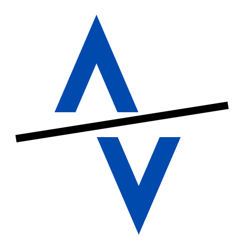

<!-- Extend / Import basic templating from 'base.html' -->
{% extends 'base.html' %}

<!-- Within each page's <html> : 
{% block NAME %} your_page's_custom_stuff_here {% endblock %} -->

<!DOCTYPE html>
<html>
    <head>
        {% block head_script %}
        
        <!-- JS Leaflet -->
        <link rel="stylesheet" href="https://unpkg.com/leaflet@1.7.1/dist/leaflet.css"
        integrity="sha512-xodZBNTC5n17Xt2atTPuE1HxjVMSvLVW9ocqUKLsCC5CXdbqCmblAshOMAS6/keqq/sMZMZ19scR4PsZChSR7A=="
        crossorigin=""/>
        <script src="https://unpkg.com/leaflet@1.7.1/dist/leaflet.js"
        integrity="sha512-XQoYMqMTK8LvdxXYG3nZ448hOEQiglfqkJs1NOQV44cWnUrBc8PkAOcXy20w0vlaXaVUearIOBhiXZ5V3ynxwA=="
        crossorigin=""></script>       
        
        {% endblock %}
    </head>
    <body>
        {% block body %}
  
        <!-- SIDERBAR / NAVBAR -->
        <div id="toggler">
            <a href="#" data-bs-toggle="offcanvas" data-bs-target="#sidebar">
                
            </a>            
        </div>

        <div class="offcanvas offcanvas-start" data-bs-scroll="true" data-bs-backdrop="true" tabindex="-1" id="sidebar">
            <div class="offcanvas-header">
                <h4 class="offcanvas-title text-white">Main Menu</h4>
                <a href="#" data-bs-dismiss="offcanvas">
                    
                </a>
            </div>
            <div class="offcanvas-body">
                <ul class="menu">
                    <hr>
                    <li class="submenu-map-options">
                        <div>
                            <a href="#" id="toggle-map-options-text" data-bs-toggle="collapse" data-bs-target="#map-options">
                                Map Options
                            </a>
                            <a href="#" id="toggle-map-options-arrow" data-bs-toggle="collapse" data-bs-target="#map-options">
                                
                            </a>
                        </div>
                        <ul class="submenu collapse" id="map-options">
                            <li><a href="#" class="submenu-item">Activities by Type</a></li>
                                <div id="filter-types">
                                    <div class="form-check form-switch">
                                        <input class="form-check-input activity-filter" type="checkbox" id="run" checked>
                                        <label class="form-check-label" for="run">Run</label>
                                    </div>
                                    <div class="form-check form-switch">
                                        <input class="form-check-input activity-filter" type="checkbox" id="ride" checked>
                                        <label class="form-check-label" for="flexSwitchType">Ride</label>
                                    </div>
                                    <div class="form-check form-switch">
                                        <input class="form-check-input activity-filter" type="checkbox" id="swim" checked>
                                        <label class="form-check-label" for="flexSwitchType">Swim</label>
                                    </div>
                                    <div class="form-check form-switch">
                                        <input class="form-check-input activity-filter" type="checkbox" id="hike" checked>
                                        <label class="form-check-label" for="flexSwitchType">Hike</label>
                                    </div>
                                    <div class="form-check form-switch">
                                        <input class="form-check-input activity-filter" type="checkbox" id="walk" checked>
                                        <label class="form-check-label" for="flexSwitchType">Walk</label>
                                    </div>
                                </div>
                            <li><a href="#" class="submenu-item">Activities by Year</a></li>
                                <div id="year-selector">
                                    <div class="form-check form-switch">
                                        <input class="form-check-input activity-filter" type="checkbox" id="2021" checked>
                                        <label class="form-check-label" for="flexSwitchYear">2021</label>
                                    </div>
                                    <div class="form-check form-switch">
                                        <input class="form-check-input activity-filter" type="checkbox" id="2020" checked>
                                        <label class="form-check-label" for="flexSwitchYear">2020</label>
                                    </div>
                                    <div class="form-check form-switch">
                                        <input class="form-check-input activity-filter" type="checkbox" id="2019" checked>
                                        <label class="form-check-label" for="flexSwitchYear">2019</label>
                                    </div>
                                    <div class="form-check form-switch">
                                        <input class="form-check-input activity-filter" type="checkbox" id="2018" checked>
                                        <label class="form-check-label" for="flexSwitchYear">2018</label>
                                    </div>
                                    <div class="form-check form-switch">
                                        <input class="form-check-input activity-filter" type="checkbox" id="2017" checked>
                                        <label class="form-check-label" for="flexSwitchYear">2017</label>
                                    </div>
                                </div>
                            <li><a href="#" class="submenu-item">Customize Look</a></li>
                                <div id="slider-container">
                                    <input type="range" value="1" name="slider" id="slider">
                                    <output id="output"></output>
                                </div>
                            <hr>
                        </ul>
                    </li>
                    <li>
                        <a href="/training">Training Plan</a>
                    </li>
                    <li>
                        <a href="#">Diet</a>
                    </li>
                    <li>
                        <a href="#">Journal</a>
                    </li>
                </ul>
                <!-- How to keep links pinned to bottom of sidebar? -->
                <!-- <div class="separator"></div> -->
                <ul class="links">
                    <hr>
                    <li>
                        <a href="/logout">
                            
                            Log Out
                        </a>
                    </li>
                    <li>
                        <a href="https://www.strava.com/dashboard" target="_blank">Go to Strava</a>
                    </li>
                    <li>
                        <a href="https://www.linkedin.com/in/katalin-schmidt" target="_blank">About the Dev</a>
                    </li>
                </ul>
            </div>
        </div>  
         <!-- END SIDEBAR / NAVBAR  -->
 
        <!-- LEAFLET -->
        <div id="activities-map">
            <!-- Map renders here -->
        </div>
        <!-- END LEAFLET -->

        <!-- LOADER ANIMATION -->
        <!-- Inspiration: https://codepen.io/tashfene/pen/raEqrJ -->
        <div class="loader-wrapper">
            <span class="loader rounded-circle"></span>
        </div>
        <!-- END LOADER ANIMATION -->

        {% endblock %}
    </body>

    <footer>
        {% block footer_script %}
        <!-- My files / Rendering JS Leaflet -->
        <script type="module" src="../static/leaflet_tile_util.js"></script>
        <script type="module" src="../static/leaflet_poly_util.js"></script>
        <script type="module" src="../static/profile.js"></script>
        {% endblock %}
    </footer>
</html>